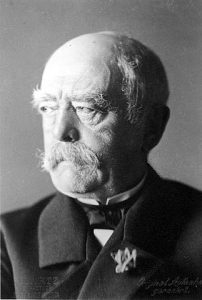

Alman Lider Bismarck’ın Siyasi Reformları
Alman tarihi, Bismarck gibi etkileyici liderler sayesinde çok çeşitli dönüm noktaları yaşamıştır. Özellikle Bismarck’ın siyasi reformları, sadece Almanya’nın değil, tüm Avrupa’nın şekillenmesinde önemli bir rol oynamıştır. Bu yazıda, Bismarck’ın birleştirici siyasetinin nasıl bir temel oluşturduğunu ve Alman İmparatorluğu’nda sosyal güvenlik sisteminin nasıl kurulduğunu ele alacağız. Onun vizyonunun, günümüz Alman politikasını ve toplumunu nasıl etkilediğini keşfetmek, şüphesiz ki sadece tarih meraklıları için değil, herkes için büyüleyici bir konu. 
{kind=link}
Alman lider Otto von Bismarck, 19. yüzyılda Avrupa’da dengeleri değiştiren bir figürdü. Onun liderliğindeki Alman tarihi, birleştirici politikalar ve önemli reformlarla doludur. Bismarck’ın siyaseti, Alman devletlerini tek bir çatı altında birleştirmeyi amaçlayarak, modern Almanya’nın temellerini atmıştır. Bu birleştirme süreci, sadece toprakların birleşmesi değil, aynı zamanda kültürel ve sosyal bir bütünleşmeyi de ifade eder.
Bismarck, farklı devletlerin ilgilerini dengede tutarak ve dış politikada ustalıkla manevra yaparak Almanya’nın birleşmesini sağlamıştır. Onun reformları arasında, askeri güçlendirme, dış politikada izolasyon stratejileri ve iç politikada sosyal reformların yanı sıra siyasi istikrarı sağlayacak adımlar öne çıkar. Bu adımlar, Alman tarihi açısından bir dönüm noktası oluşturmuş ve Almanya’nın dünya sahnesindeki güçlü konumunun temellerini atmıştır.
Bismarck’ın siyaseti, bugün bile Almanya’nın toplumsal ve politik yapısını etkilemeye devam ediyor. Onun vizyonu, birlik içinde güç bulmanın ve farklılıkları uyum içinde yönetmenin önemini vurgular. Bismarck’ın reformları, Alman tarihinde sadece bir dönemi değil, aynı zamanda bugünkü modern Alman devletinin temel yapıtaşlarını şekillendirmiştir. Bu yüzden, Otto von Bismarck ve onun politikaları, Alman tarihinin anlaşılması açısından büyük bir öneme sahiptir.
Alman tarihi, sosyal politikalar konusunda dikkat çekici bir dönüşüme sahne olmuştur. Özellikle Bismarck dönemi, bu alandaki yeniliklerle öne çıkar. İşte o dönemde, Alman İmparatorluğu’nda sosyal güvenlik sisteminin temelleri atılmıştır. Bismarck’ın reformları, çalışanların yaşadığı güvencesizliği azaltmayı hedeflemiştir. Böylece, kaza sigortası, hastalık sigortası ve yaşlılık ile malullük sigortalarının temelleri atılarak, dünyada sosyal güvenlik sisteminin kurulduğu ilk örneklerden birisi Almanya’da gerçekleşmiş oldu.
Bu reformlar sayesinde, Alman tarihi çalışma yaşamında öncü bir rol oynamış ve diğer ülkeler için bir model teşkil etmiştir. Bismarck’ın öngörülü politikaları, sosyal güvenliğin sadece bireyin değil, aynı zamanda bir ulusun sağlığı ve istikrarı için de ne kadar önemli olduğunu göstermiştir.
Almanya’nın bu adımları, sosyal politikaların şekillenmesinde çığır açmış ve bugün bile birçok ülkenin sosyal güvenlik sistemlerine ilham kaynağı olmaya devam etmektedir.